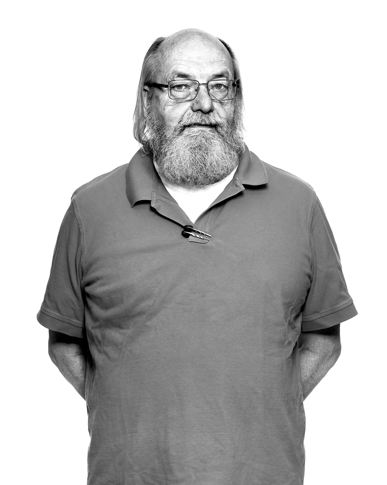

Thompson in a nutshell
Ken Thompson was born in New Orleans, Louisiana, in 1943. He graduated with a bachelor of science (1965) and a master's degree (1966), both in electrical engineering and computer science, from the 'University of California,' Berkeley.
In 1969, Thompson and colleague Dennis Ritchie created the UNIX operating system at Bell Telephone Laboratories. UNIX was a scaled-down version of the MIT MULTICS operating system, one meant to run on the new smaller minicomputers becoming available at the end of the 1960s. When re-written in the C programming language by Dennis Ritchie, UNIX became a truly portable operating system capable of running on many different hardware platforms. The C language itself was widely adopted and is in wide use today.